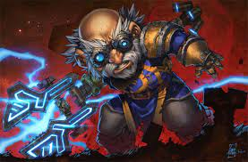

Mekkatorque
Los gnomos no han tenido un rey propiamente dicho desde hace más de 400 años. En su lugar prefieren elegir a los más altos oficiales para realizar las tareas que requiere el puesto. El cargo más importante de Gnomeregan, el Manitas Mayor, es el título que ostenta Gelbin Mekkatorque desde hace unos años. Gelbin es uno de los más reconocidos inventores de la historia, y se le honra como un líder justo y habilidoso. A los Manitas Mayores se les permite llevar grandes títulos durante el periodo en que permanecen en el cargo, tras lo cual regresan a los trabajos de campo. Cuando fue nombrado Manitas Mayor, Mekkatorque escogió el título de “Rey de los Gnomos”, que aunque suene un poco tonto, lo es más que lo que su propia mentalidad pueda sugerir (lo que no quita que esté bastante loco).
Sin embargo, cuando los trogg invadieron Gnomeregan, Gelbin se encontró con que no estaba preparado para detenerlos. Haciendo caso de su mayor consejero, Sicco Termoenchufe, ordenó que la ciudad fuera rociada con radiación tóxica, proveniente de una bomba radiactiva. Aunque la radiación detuvo el avance de los troggs, acabó matando a más gnomos que troggs y ahora, Geblin carga con el peso de la muerte de los suyos sobre sus hombros y busca vengar a su gente reclamando su ciudad perdida.
Aunque él también sufrió quemaduras debidas a la bomba, su ingenio es aún lo bastante fuerte como para mantener su título. También es una buena persona.
Mekkatorque pasa la inmensa mayoría de su tiempo trazando planes para retomar Gnomeregan, sabiendo que muchos de los suyos están aún atrapados dentro sin forma de escapar. Aunque aprecia la hospitalidad de los enanos, Forjaz es demasiado pequeña para ambas razas, al menos a largo plazo. Mekkatorque trabaja regularmente con los enanos para perfeccionar nuevas tecnologías y estrategias militares y es responsable parcialmente de los nuevos modelos de máquinas voladoras enanas que están siendo enviadas a la guerra, si bien en estos momentos su gente no es lo suficientemente numerosa como para hacer una contribución mayor a la Alianza. Mekkatorque también ha asignado un equipo para la investigación de armamento anti-Azote, ya que sabe que un ataque no-muerto es inminente.
Es uno de los dos miembros gnomos a los que se atribuye la creación del tren subterráneo, una veloz forma de transporte entre Forjaz y Ventormenta. Los inventores gnomos siempre se organizan en parejas, una extraña relación loco-cuerdo. Uno siempre trata de forzar los límites de sus dispositivos hasta extremos inconcebibles mientras que el otro hace todo lo posible por evitar que el invento se convierta en algo desastroso. Fueron dos parejas de este tipo las que crearon el ferrocarril subterráneo que conecta las capitales de los enanos y los humanos. Sin embargo, no está claro a qué miembro de la pareja representa Gelbin, si al loco o al cuerdo.
Durante el evento de la Fiesta de la cerveza, Mekkatorque sale de la ciudad a las 6 A.M. y a las 6 P.M. cada día para dar un discurso sobre un barril de cerveza a las puertas de Forjaz. Los jugadores que estén presente en ese momento recibirán un buff de dos horas que incrementa la experiencia ganada por muertes de enemigos un 10%.
